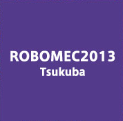
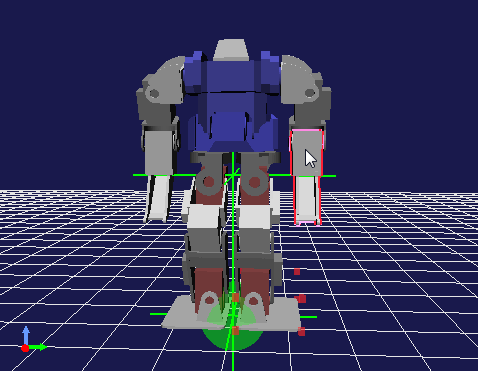

ROBOMEC2013講習会(2013年5月22日)

✏️ Edit this page on GitHub

#contents
ROBOMEC2013講習会
2013年5月22日(水)につくば市のつくば国際会議場において、ROBOMECでのRTミドルウエア講習会を開催いたしました。
日時・場所
- 主催: (独)産業技術総合研究所
- 協賛: (公社)計測自動制御学会システムインテグレーション部門
- 日時: 2013年5月22日(水), 10:00～17:00
ROBOMEC2013チュートリアルとして開催 - 場所: つくば国際会議場、小会議室303
- アクセス: 交通アクセス
- 詳細はROBOMEC2013 Webページをご覧ください。
- 参加者: 第1部37名、実習22名（+講師・スタッフ9名）
プログラム
| 10:00 -10:50 | **第1部(その1)：インターネットを利用したロボットサービスとRSiの取り組み（最新動向）** **担当**：成田雅彦 先生 (産業技術大学院大学) **概要**：インターネットやクラウドとロボットとの連携は急速に注目を集めている領域です。本講演では、インターネットやクラウドとロボットとの連携の動向を外観し、RSi（ロボットサービスイニシアティブ）の仕様であるRSNPと最新の取り組みを紹介します。 |
| 11:00 -11:50 | **第1部(その2)：OpenRTM-aistおよびRTコンポーネントプログラミングの概要** **担当**：安藤慶昭 氏 (産総研) **概要**：RTミドルウエアはロボットシステムをコンポーネント指向で構築するソフトウエアプラットフォームです。RTミドルウエアを利用することで、既存のコンポーネントを再利用し、モジュール指向の柔軟なロボットシステムを構築することができます。RTミドルウエアの産総研による実装であるOpenRTM-aistについてその概要およびRTコンポーネントの機能やプログラミングの流れについて説明します。 **講義資料**:130522-01.pdf |
| 11:50 -12:00 | 質疑応答・意見交換 |
| 12:00 -13:00 | 昼食 |
| 13:00 -14:00 | **第2部: RTコンポーネントの作成入門** **担当**：坂本武志 氏 (株式会社グローバルアシスト) **概要**：RTCBuilderを使用したRTコンポーネントの作成方法を実習形式で体験していただきます。 **講義資料**:130522-02.pdf |
| 14:00 -16:45 | **第3部：プログラミング実習** 担当：Geoffrey Biggs 氏 (産総研)、坂本武志 氏 (株式会社グローバルアシスト)、原功 氏 (産総研)、安藤慶昭 氏 (産総研) **概要**：OpenRTM-aistを利用してコンポーネントを作成し実際にロボットを動かしていただきます。 今回は2つのコース (Kobuki & Raspberry Piコース, G-ROBOT & Choreonoidコース) を用意しました。 **講義資料**:130522-03.pdf |
Kobuki & Raspberry Piコース
ARMプロセッサを搭載した小型のシングルボードコンピュータRaspberry Piを使用して、移動ロボット Kobukiを動かしたり、Raspberry Pi用IOボードを利用したジョイスティックを作成したりします。 これらを組み合わせてKobukiを遠隔操作したり、自律走行させたりすることを目標にします。


;
G-ROBOT & Choreonoidコース
G-ROBOTを操作するインターフェースを実際に作ってみたり、産総研で開発されたロボットのモーションエディタ・シミュレータ Choreonoid 上のG-ROBOTを動かしたりします。

;
必要機材
- ノートPC
- OS: Windowsを推奨します。応用コースの方は自分で対処出来る場合はどちらでも結構です
- Eclipseが動作する程度のスペックが必要です
- メモリ: 1GB以上
- CPU: Core2Duo以上
- HDD空き: 5GB以上 (Visual C++ Expressの場合)
- USBカメラ (USBカメラ無しで申込まれた方には貸与いたします)
Windowsのファイアウォールは必ず切っておいてください。;
必要ソフトウエア
- Visual C++ 2010
- 無料のExpress版が こちら からダウンロードできます。
- インストールには時間がかかりますので、ご注意ください。
- VC2012には対応していません。また、VC2008は少々古いのでお勧めいたしません。
- OpenRTM-aist-1.1.0 C++版
- インストールされているVCに一致するバージョンをダウンロードしてください。;
- 64bit版はPythonとの相性が悪いので、32bit版をお勧めします。
- OpenRTM-aist-1.1.0-RC1 Python
- Python 2.6(32bit)
- PyYAML
- CMake
- Doxygen
- JDK
- 32bit版をお勧めします。
- Eclipse全部入り
- Windows用32bit版全部入りを推奨します。
- インストール後、メニューの「ヘルプ」→「新規ソフトウエアのインストール」を選択、更新サイトに http://openrtm.org/pub/openrtp/releases/updates を入力してRTSystemEditorとRTCBuilderをアップデートしておくことをお勧めします。
- TeraTerm
- Bonjour: インストール方法についてはこちら
- iTunesやBonjour Print Services for Windowsがインストールされていれば不要です。
- 使い慣れたエディタ: EclipseやPythonに付属のエディタでも構いませんが、使い慣れたエディタが入っていた方が良いでしょう
講義資料
第1部（その１） インターネットを利用したロボットサービスとRSiの取り組み（最新動向）
第1部（その２） OpenRTM-aistおよびRTコンポーネントプログラミングの概要
第2部 RTコンポーネントの作成入門
第3部 Kobuki & Raspberry Piコース
Kobuki & Raspberry Piコース
Kobuki & Raspberry Piコースでは以下の内容を実施、紹介しました。
G-ROBOT & Choreonoidコース
G-ROBOT & Choreonoidコースでは以下の内容を実施しました。
講習会の様子
{kind=link}
{kind=link}
{kind=link}
{kind=link}
{kind=link}
{kind=link}
{kind=link}
&aname(comment);